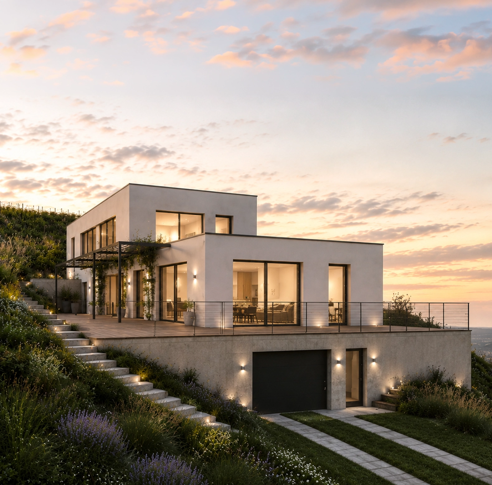

Odemykám skutečný potenciál nemovitostí.
Odborný podklad pro správné investiční rozhodnutí. Pro investory, developery, majitele nemovitostí a firmy připravující stavební záměry.


Analýza investičního a technického potenciálu nemovitosti
Každá nemovitost nabízí příležitosti.
Každá má také svá omezení a rizika.
Před koupí, rekonstrukcí nebo developerským záměrem je důležité znát nejen současný stav nemovitosti, ale také její skutečný potenciál, možnosti dalšího využití a faktory, které mohou ovlivnit její budoucí hodnotu i celkové náklady.
Analýza investičního a technického potenciálu nemovitosti propojuje architektonický, technický, legislativní a investiční pohled do jednoho odborného posouzení. Díky tomu poskytuje komplexní pohled na nemovitost a vytváří kvalitní podklad pro správné investiční rozhodnutí.
Co potřebujete vědět, než se rozhodnete
- Je nemovitost skutečně vhodná pro váš záměr?
- Co na ní můžete realizovat – a co naopak ne?
- Jaká omezení mohou váš záměr prodražit nebo znemožnit?
- Kde jsou skrytá technická, legislativní nebo jiná rizika?
- Existuje způsob, jak zvýšit potenciál a hodnotu nemovitosti?
- Co je potřeba prověřit ještě před koupí nebo investicí?
- Jaký další postup vám doporučuji?
Skutečný potenciál nemovitosti
Posouzeni možnosti využití a návratnosti investice
Identifikace rizik
Technická, legislativní, územní i investiční rizika, která mohou zásadně ovlivnit průběh a výsledky projektu.
Doporučení dalšího postupu
Jasný návrh optimálního dalšího kroku před zahájením jakýchkoliv prací na nemovitosti.
Podklady pro optimální rozhodnutí
Nezávislý odborný pohled, který vám pomůže ušetřit náklady nebo naopak objevit příležitost.
Klid a jistota
Rozhodnete se na základě faktů, ne intuice.
Rozsah analýzy
Každá nemovitost i každý investiční záměr jsou jedinečné. Proto se rozsah analýzy vždy stanovuje individuálně podle konkrétního projektu. Níže uvedené varianty slouží jako orientační přehled nejčastějších typů spolupráce.
Rodinné domy, byty a menší stavební záměry
- Rodinné domy
- Stavební pozemky
- Rekonstrukce domů a bytů
- Přístavby a nástavby
- Menší stavební záměry
Komerční objekty a developerské projekty
- Bytové domy
- Komerční objekty
- Rozsáhlejší rekonstrukce
- Developerské projekty
- Větší investiční záměry
Odborné poradenství ke konkrétnímu záměru
Pro případy, kdy nepotřebujete komplexní analýzu, ale odborně posoudit konkrétní otázku nebo záměr. Konzultace může sloužit například při koupi nemovitosti, plánované rekonstrukci nebo při rozhodování o dalším postupu.
Nezávazně poptatJak probíhá spolupráce
Úvodní hovor
Společně projdeme základní informace o nemovitosti, záměru a dostupných vstupních podkladech.
Návrh spolupráce
Na základě úvodního hovoru připravím návrh rozsahu analýzy, časový harmonogram a cenovou nabídku.
Analýza nemovitosti
Provedu odborné posouzení nemovitosti a prověřím její potenciál, možnosti, limity i rizika s ohledem na konkrétní záměr.
Výstup a doporučení
Společně projdeme výsledky analýzy, zodpovím vaše otázky a doporučím další vhodný postup.
Pozemek ve svahu
vinic u Brna
Zadání
Investor zvažoval koupi atraktivního stavebního pozemku ve svahu vinic v okolí Brna. Lokalita nabízela výjimečné výhledy, jedinečné přírodní prostředí a vysoký potenciál pro výstavbu rodinného domu. Cílem analýzy bylo prověřit, zda pozemek skutečně odpovídá plánovanému investičnímu záměru a zda neexistují technická nebo jiná omezení, která by mohla ovlivnit budoucí využití nemovitosti.
Průběh analýzy
Součástí posouzení byla architektonická studie, která ověřila možnosti využití pozemku a potvrdila jeho potenciál pro zamýšlenou výstavbu. Zároveň však analýza upozornila na možné geologické riziko související s umístěním pozemku ve strmém svahu. Na základě tohoto doporučení bylo ještě před dokončením koupě provedeno odborné geologické posouzení a dlouhodobé měření stability svahu. Výsledky následně potvrdily aktivní sesuvné pohyby, které představovaly významné technické i finanční riziko pro budoucí stavbu.
Výsledek
Na základě odborných podkladů se investor rozhodl od koupě pozemku odstoupit a vyhnout se tak dlouhodobému technickému i finančnímu riziku.


Odbornost, na které stavím
Na projekty se dívám z pohledu architektky, projektové manažerky i člověka, který má zkušenost s projektováním, investiční přípravou a řízením projekčních týmů.
Navazující služby
Na základě výsledků analýzy je možné zajistit také navazující odborné služby podle potřeb konkrétního projektu.
Architektonická studie
Projektová dokumentace
Inženýrská činnost
Koordinace odborných profesí
Další navazující služby
Tyto služby nejsou součástí základní analýzy. Jejich rozsah i cena se stanovují individuálně podle konkrétního projektu.
Kontaktní informace
Plánujete koupi, rekonstrukci nebo investici do nemovitosti?
Kontaktujte mě telefonicky nebo e-mailem. Společně projdeme váš projekt, posoudíme vhodný rozsah analýzy a domluvíme další postup.